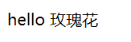

GO Web实战 一个基于Gin和GORM的小型项目
1. 前言
Gin、GORM、Web项目
开发工具goland/vscode
2. 一个Go Web的小示例程序
1 | package main |
访问
localhost:9090/hello即可打开“Hello GoLang！”页面主要学习使用
net/http包的函数
3. 初识Gin
3.1 Gin是什么
Gin 是一个用 Go (Golang) 编写的 HTTP web 框架。 它是一个类似于 martini 但拥有更好性能的 API 框架, 优于 httprouter，速度提高了近 40 倍。如果你需要极好的性能，使用 Gin 吧。中文文档：https://gin-gonic.com/zh-cn/docs/
如上节所示，不用Gin也可以开发web，但是框架使其开发更简单！
3.2 Gin下载安装
1 | go get -u github.com/gin-gonic/gin |
3.3 一个Gin简单示例
1 | package main |
- 打开
8080/hello，会得到一个Json数据{"message":"Hello"} - 需要使用postman来测试Restful风格接口，浏览器是不能发送
put/delete请求
4. 初识template
4.1 模板引擎
Go语言内置了文本模板引擎text/template和用于HTML文档的html/template。它们的作用机制可以简单归纳如下：
- 模板文件通常定义为
.tmpl和.tpl为后缀（也可以使用其他的后缀），必须使用UTF8编码。 - 模板文件中使用
{{`和`}}包裹和标识需要传入的数据。 - 传给模板这样的数据就可以通过点号（
.）来访问，如果数据是复杂类型的数据，可以通过{ { .FieldName }}来访问它的字段。 - 除
{{`和`}}包裹的内容外，其他内容均不做修改原样输出。
4.2 模板引擎的使用
Go语言模板引擎的使用可以分为三部分：定义模板文件、解析模板文件和模板渲染.
1)定义模板文件按照相关语法规则去编写
2)解析模板文件
上面定义好了模板文件之后，可以使用下面的常用方法去解析模板文件，得到模板对象：
1 | func (t *Template) Parse(src string) (*Template, error) |
当然，你也可以使用func New(name string) *Template函数创建一个名为name的模板，然后对其调用上面的方法去解析模板字符串或模板文件。
3）模板渲染
渲染模板简单来说就是使用数据去填充模板，当然实际上可能会复杂很多。
1 | func (t *Template) Execute(wr io.Writer, data interface{}) error |
4.3 一个示例程序
1 | package main |
1 |
|
访问localhost:9090/hello测试，可以看到如下页面
